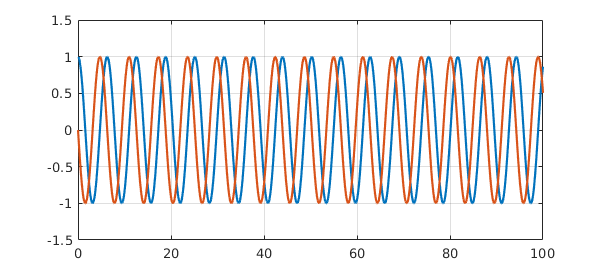
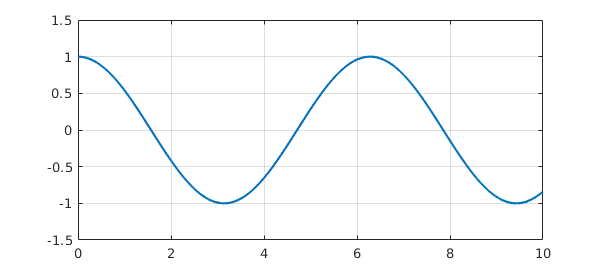

Chapter 7 described Chebfun's "chebop" capabilities for solving linear ordinary differential equations by the backslash command. We will now describe extensions of chebops to nonlinear problems, as well as special methods used for ODE initial-value problems (IVPs) as opposed to boundary-value problems (BVPs). Most of the design and implementation of these features was done by Asgeir Birkisson in collaboration with Toby Driscoll.
10.1 Boundary-value problems: \ and solvebvp
Chebfun contains overloads bvp4c and bvp5c of MATLAB codes of the same names. However, these are not our recommended methods for solving BVPs, and we will not discuss them here. Instead, we present methods based on \ and its equivalent command solvebvp.
Recall that in Chapter 7, we realized linear operators as chebops constructed by commands like these:
L = chebop(-1, 1); L.op = @(x,u) 0.0001*diff(u,2) + x.*u;
Using such an object we can solve the BVP $$ 0.0001 u'' + xu = e^x, \qquad u(-1) = 0, ~~ u(1) = 1 $$ as follows:
L.lbc = 0; L.rbc = 1;
x = chebfun('x');
u = L\exp(x);
LW = 'linewidth'; lw = 1.6;
plot(u, 'm', LW, lw)

What's going on in such a calculation is that L is a prescription for constructing matrices of arbitrary dimensions which are Chebyshev spectral approximations to the differential operator. When backslash is executed, the problem is solved on successively finer grids until convergence is achieved.
The object L is a chebop:
L
L =
Linear operator:
u |--> 0.0001.*diff(u,2)+x.*u
operating on chebfun objects defined on:
[-1,1]
with
left boundary condition(s):
u = 0
right boundary condition(s):
u = 1
Notice that Chebfun has detected that the chebop is linear. Doing this automatically is not a triviality! --- see [Birkisson & Driscoll 2013].
The same approach also works for nonlinear problems. For example, in Section 7.9 we hand-coded a Newton iteration to solve the nonlinear BVP $$ 0.001u''-u^3 = 0,\qquad u(-1) = 1,~~ u(1) = -1. $$ Chebfun solves such problems automatically in response to the same syntax as above. Switching from L to N to suggest nonlinearity, let us write
N = chebop(@(x,u) 0.001*diff(u,2) - u.^3); N.lbc = 1; N.rbc = -1;
This gives us a chebop which Chebfun recognizes as nonlinear,
N
N =
Nonlinear operator:
u |--> 0.001.*diff(u,2)-u.^3
operating on chebfun objects defined on:
[-1,1]
with
left boundary condition(s):
u = 1
right boundary condition(s):
u = -1
To solve the BVP, we can write
u = N\0; clf, plot(u)
Note that this is the same result as in Section 7.9. How does Chebfun solve such problems? That is a long story, which we shall not tell properly here. In brief, a Newton iteration (sometimes a damped Newton iteration) is carried out in "continuous mode", that is, in a space of functions rather than vectors. Recall that to find a zero of a scalar function, Newton's method requires a derivative at each iterative step, and to find a zero vector of a system of equations, it requires a Jacobian matrix. Here, we seek a zero function of a nonlinear differential operator equation. For this, Newton's method requires at each step the continuous analogue of a Jacobian matrix, which is a Frechet derivative linear operator. This Frechet derivative is realized in Chebfun by a continuous analogue of Automatic Differentiation using methods described in [Birkisson & Driscoll 2012].
Here is an example with a variable coefficient, a nonlinear BVP due to George Carrier analyzed in Sec. 9.7 of the book [Bender & Orzsag 1978]. We seek a function $u$ satisfying $$ \varepsilon u'' + 2(1-x^2) u + u^2 = 1, \qquad u(-1)=u(1) = 0 $$ with $\varepsilon = 0.01$. Here is a Chebfun formulation and solution.
ep = 0.01; N = chebop(-1, 1); N.op = @(x,u) ep*diff(u,2) + 2*(1 - x.^2).*u + u.^2; N.bc = 'dirichlet'; u = N\1; plot(u, 'm', LW, lw)

This is one of several valid solutions to this problem. To find another, we can specify a initial guess for the Newton iteration that differs from Chebfun's default (a polynomial function constructed to satisfy the boundary conditions--the zero function in this case). For example, here we specify the initial guess $u(x) = 2(x^2 - 1)(1 - 2/(1 + 20x^2))$ and get a solution with two peaks instead of four.
x = chebfun('x');
N.init = 2*(x.^2 - 1).*(1 - 2./(1 + 20*x.^2));
[u, info] = solvebvp(N, 1);
plot(u,'m',LW,lw)

This time, instead of using \, we called the underlying method solvebvp, and we specified two output arguments. The second output is a MATLAB struct containing data showing the norms of the updates during the Newton iteration, revealing a slow initial phase followed by eventual rapid convergence.
nrmdu = info.normDelta; semilogy(nrmdu,'.-k',LW,lw), ylim([1e-14,1e2])

Another way to get information about the Newton iteration with nonlinear backlash is by setting
cheboppref.setDefaults('plotting','on')
or
cheboppref.setDefaults('display','iter')
Type help cheboppref for details. Here we shall not pursue this option and thus return the system to its factory state:
cheboppref.setDefaults('factory')
When you apply backslash to a nonlinear chebop, it invokes the overloaded MATLAB command mldivide; this in turn calls solvebvp to do the actual work. By calling solvebvp directly, you can control the computation in ways not accessible through backslash, a situation just like the relationship between \ and linsolve for solving a linear system in MATLAB. See the help documentation for details.
10.2 Initial-value problems: \ and solveivp
For IVPs, Chebfun contains overloads ode113, ode45, and ode15s of familiar MATLAB codes. Again, however, these are not our recommended methods. Instead, we recommend \ and its equivalent solveivp.
For example, suppose we want to solve the nonlinear IVP $$ u' = u^2, \qquad t\in [0,1], \quad u(0)=0.95. $$ We can set up the problem like this:
N = chebop(0, 1); N.op = @(t,u) diff(u) - u.^2; N.lbc = 0.95
N =
Nonlinear operator:
u |--> diff(u)-u.^2
operating on chebfun objects defined on:
[0,1]
with
left boundary condition(s):
u = 0.95
Since boundary conditions have been specified at only one end of the domain, Chebfun knows that this is an initial value problem. We solve it and plot the solution:
u = N\0; plot(u,'m',LW,lw)

A major change was introduced in Version 5.1 in how initial-value (and final-value) problems are solved. Before, Chebfun used the same global spectral representations as for BVPs. This usually works fine for linear problems, but for nonlinear ones, it is inferior to the method of time-stepping by Runge-Kutta or Adams formulas. In Chebfun Version 5.1, we have accordingly switched to solving IVPs numerically by ode113 (by default), converting the resulting output to a Chebfun representation. (This work, a substantial job since higher-order equations must be reformulated as first-order systems, was carried out by Asgeir Birkisson.) If you wish to invoke the global spectral method instead of time-stepping, you can write
u2 = solvebvp(N,0);
(With cheboppref.setDefaults('ivpSolver','collocation') you could make this switch globally.) For this problem the method converges, giving a solution that is close but not the same:
norm(u-u2)
ans =
2.252258906552143e-09
For many nonlinear IVPs, however, the solvebvp approach would not converge.
Here is an example of an IVP with two components; the equation happens to be linear.
N = chebop(0, 100); N.op = @(t,u) diff(u,2) + u; N.lbc = [1; 0]; u = N\0; plot(u, 'm', diff(u), 'c', LW, lw), ylim([-1.5 1.5])

As a third example, let us solve a van der Pol equation for a nonlinear oscillator, $$ \varepsilon u'' = (1-u^2)u' - u , \qquad t\in [0,20], ~~ u(0) = 3, ~~u'(0) = 0. $$ Here is a solution with $\varepsilon = 0.05$:
N = chebop(0,20); N.op = @(t,u) 0.05*diff(u,2) - (1-u.^2).*diff(u) + u; N.lbc = [3; 0]; u = N\0; plot(u), shg

As a final example let us consider the famous Lorenz equations, whose solution trajectories are chaotic: We can set up the problem and solve it like this:
N = chebop(0,15);
N.op = @(t,u,v,w) [diff(u)-10.*(v-u);
diff(v)-u.*(28-w)+v;
diff(w)-u.*v+8./3.*w];
N.lbc = @(u,v,w) [u+14; v+15; w-20];
[u,v,w] = N\0;
plot3(u,v,w,LW,1), view(-5,9), axis off

10.3 Stiff IVPs
Chebfun's default solution methods work well for moderately stiff ODE IVPs. For highly stiff problems, however, it is desirable to switch the underlying engine from the default ode113 to the stiff solver ode15s. For example, the problem $$ u' = -u - 10000(u(t)-\cos(t)), \qquad u(0) = 1 $$ has the solution $u(t) = \cos(t)$. However, it is highly stiff, and to solve it we can proceed as follows:
N = chebop(0, 10); N.op = @(t,u) diff(u) + sin(t) + 10000*(u-cos(t)); N.lbc = 1; pref = cheboppref; pref.ivpSolver = 'ode15s'; tic, u = solveivp(N,0,pref); toc plot(u, LW, lw), ylim([-1.5 1.5])
Elapsed time is 1.009338 seconds.

If we don't specify ode15s, the solution takes minutes instead of seconds.
10.4 Periodic problems
A new feature in Chebfun is the solution of periodic ODEs. For example, here is a function encoded in the gallerytrig command:
plot(cheb.gallerytrig('tsunami'), 'color', [.6 .4 0], LW, lw)
ylim([-.2 .2])

If you look in gallerytrig, you will find that this curve has been generated by the following sequence:
op = @(x,u) diff(u,2) + diff(u) + 600*(1+sin(x)).*u; L = chebop(op, [-pi,pi], 'periodic'); f = L\1;
which corresponds to the problem $$ u'' + u' + 600(1+\sin(x)) = 0, \quad x\in [-\pi,\pi], ~~ u(-\pi)=u(\pi), ~~ u'(-\pi)=u'(\pi) . $$ The periodic flag instructs Chebfun to impose periodic boundary conditions and solve the problem with a trigonometric discretization, that is, a Fourier spectral method. The result is a trigfun:
f
f =
chebfun column (1 smooth piece)
interval length endpoint values trig
[ -3.1, 3.1] 109 -0.0043 -0.0043
vertical scale = 0.17
10.5 Ultraspherical discretizations
As with most Chebfun operations involving differential equations, for nonlinear ODE BVPs and periodic ODEs Chebfun offers a choice between the default spectral collocation methods or an alternative ultraspherical method. See Sections 7.7 and 8.10.
10.6 Graphical user interface: Chebgui
Chebfun includes a GUI (Graphical User Interface) called chebgui for interactive solution of ODE, time-dependent PDE, and eigenvalue problems. For many users, this is the single most important part of Chebfun. We will not describe chebgui here, but we encourage readers to give it a try. Be sure to note the Demo menu, which offers dozens of preloaded examples, both scalars and systems. Perhaps most important of all is the "Export to m-file" button, which produces a Chebfun m-file corresponding to whatever problem is loaded into the GUI. This feature enables one to get going quickly and interactively, then switch to a Chebfun program to adjust the fine points. To start exploring, just type chebgui.
10.7 References
[Bender & Orszag 1978] C. M. Bender and S. A. Orszag, Advanced Mathematical Methods for Scientists and Engineers, McGraw-Hill, 1978.
[Birkisson 2014] A. Birkisson, Numerical Solution of Nonlinear Boundary Value Problems for Ordinary Differential Equations in the Continuous Framework, D. Phil. thesis, University of Oxford, 2014.
[Birkisson & Driscoll 2012] A. Birkisson and T. A. Driscoll, "Automatic Frechet differentiation for the numerical solution of boundary-value problems", ACM Transactions on Mathematical Software, 38 (2012), 1-26.
[Birkisson & Driscoll 2013] A. Birkisson and T. A. Driscoll, "Automatic linearity dection", preprint, eprints.maths.ox.ac.uk, 2013.